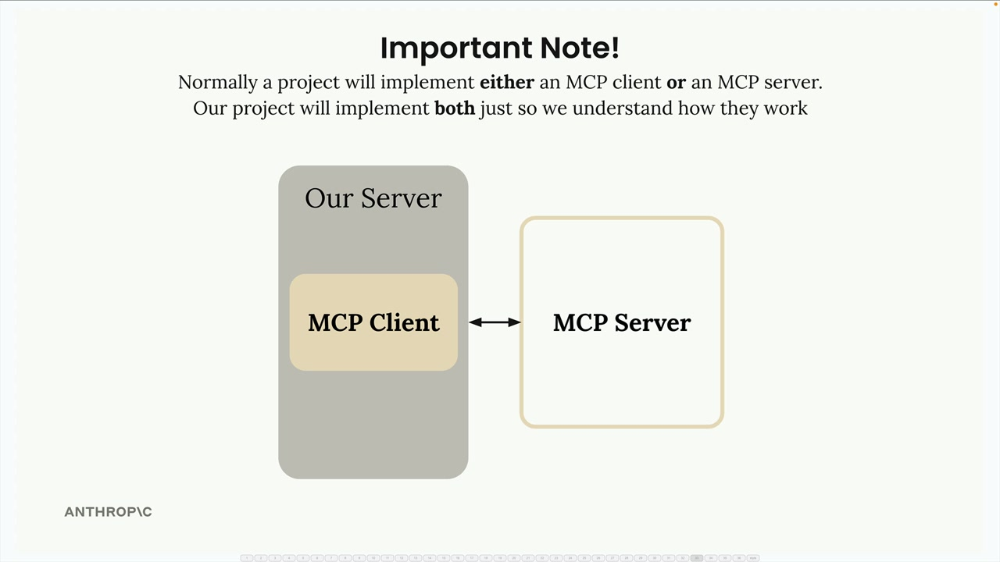
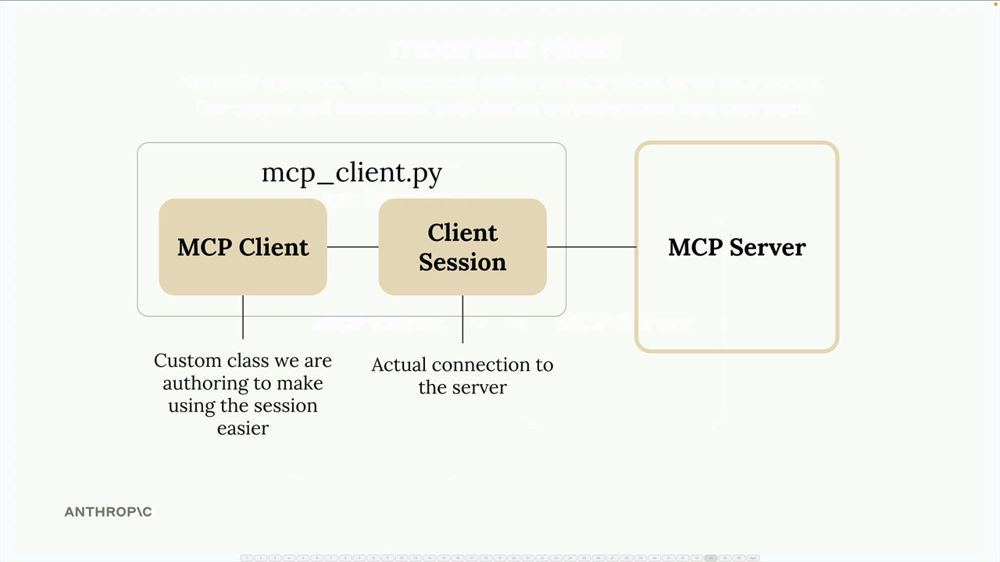
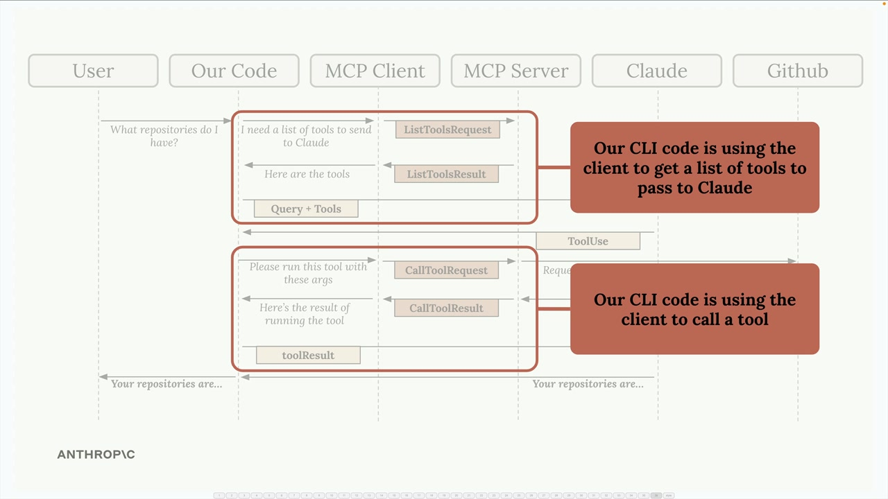

Реализация клиента
Чему научитесь
Видео 7:26 и текст урока
К концу урока вы сможете:
- объяснить устройство клиента: свой класс
MCPClientиClientSessionиз SDK; - реализовать методы
list_toolsиcall_tool; - проверить весь поток: Claude вызывает инструмент MCP-сервера.
Видео и текст урока.
Смотреть урок на Skilljar Implementing a client · 7:26MCP-сервер работает — пора строить клиентскую сторону. Клиент позволяет приложению общаться с MCP-сервером и пользоваться его функциональностью.
Устройство клиента
В большинстве реальных проектов реализуют либо MCP-клиент, либо MCP-сервер, а не оба. Здесь мы строим оба, только чтобы увидеть, как они работают вместе.

MCP-клиент состоит из двух основных частей:
- MCP Client — наш собственный класс, который упрощает работу с сессией;
- Client Session — само соединение с сервером (часть Python MCP SDK).

mcp_client.py: MCP Client → Client Session → MCP-сервер.Сессию клиента нужно правильно закрывать, когда работа окончена. Поэтому мы оборачиваем её в свой класс MCP Client — он берёт всю очистку ресурсов на себя.
Место клиента в приложении
Помните поток приложения? Код CLI должен делать с MCP-сервером две вещи:

- получить список доступных инструментов, чтобы отправить его Claude;
- выполнять инструменты, когда Claude их запрашивает.
MCP-клиент даёт эти возможности через простые вызовы методов, которыми пользуется код приложения.
Основные методы
В клиенте нужно реализовать два ключевых метода: list_tools() и call_tool().
Метод list_tools
Этот метод получает все доступные инструменты с сервера:
async def list_tools(self) -> list[types.Tool]:
result = await self.session().list_tools()
return result.tools
Всё просто: обращаемся к сессии (соединению с сервером), вызываем встроенную функцию list_tools() и возвращаем инструменты из результата.
Метод call_tool
Этот метод выполняет конкретный инструмент на сервере:
async def call_tool(
self, tool_name: str, tool_input: dict
) -> types.CallToolResult | None:
return await self.session().call_tool(tool_name, tool_input)
Передаём серверу имя инструмента и входные параметры (их даёт Claude) и возвращаем результат.
Проверка клиента
Чтобы проверить реализацию, можно запустить клиент напрямую. В файле есть тестовая обвязка, которая подключается к нашему MCP-серверу и вызывает методы:
async with MCPClient(
command="uv", args=["run", "mcp_server.py"]
) as client:
result = await client.list_tools()
print(result)
При запуске должны распечататься описания наших инструментов, включая read_doc_contents и edit_document, созданные раньше.
Собираем всё вместе
Клиент умеет получать и вызывать инструменты — можно проверить весь поток. Когда мы запускаем приложение и спрашиваем Claude о документе:
- код получает доступные инструменты через клиент;
- инструменты отправляются Claude вместе с вопросом пользователя;
- Claude решает вызвать инструмент
read_doc_contents; - код выполняет этот инструмент через клиент;
- результат уходит обратно Claude, и тот отвечает пользователю.
Например, вопрос «What is the contents of the report.pdf document?» заставит Claude воспользоваться инструментом чтения документа, и мы получим информацию о документе про 20-метровую конденсаторную башню, который мы завели на сервере.
Клиент — мост между логикой приложения и MCP-сервером: функциональность сервера доступна без забот о деталях соединения.
Дальше
Следующий урок — второй примитив сервера: ресурсы.
Оригинал урока: Implementing a client.